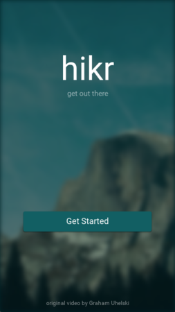

Introduction
In the previous chapter, we focused on the look and feel of our app, and got it looking nice and coherent. In the process, we also learned how to leverage Fuse's ux:Class mechanism to build reusable components for styling our app.
In this chapter, we'll tie everything together and finish our app by adding the final screen - a splash page! This will set the mood for our app right away when the user opens it and is the last piece of the puzzle we need to match our design. And with all of the tools and techniques we learned in the previous chapters, it'll be a piece of cake. So let's get started!
The full source code for the app is available here.
Building our splash screen
The first thing we'll to do for our splash screen is to create a new Page. In the Pages directory in our project, let's make a new file called SplashPage.ux with the following contents:
<Page ux:Class="SplashPage">
</Page>
Notice how we're using Page as a base class instead of the hikr.Page component we built last chapter. This is because we'll eventually add a video background to this page, so we'll just want app's background color for a background for now.
Now that we've got our SplashPage, let's add a template for it in our app's Navigator in MainView.ux. We'll also make this the default template as it's the first screen we'll want to show in our app:
<Navigator DefaultPath="splash">
<SplashPage ux:Template="splash" />
<HomePage ux:Template="home" router="router" />
<EditHikePage ux:Template="editHike" router="router" />
</Navigator>
With this saved, we should now see our blank SplashPage on screen!
Note: We may have to restart our preview, as Fuse will cache which route we've navigated to between reloads. Restarting preview will clear this cache, ensuring our
SplashPageis shown.
Now that we've got our SplashPage showing, let's look at its design:

Here we can see there's two major parts - the title text and slogan, and the "Get Started" button. Both of these parts are placed in the center of the top/bottom halves of the screen, respectively. So, the first thing we'll do is create a Grid which will split the screen up into these two cells in SplashScreen.ux:
<Page ux:Class="SplashPage">
<Grid RowCount="2">
</Grid>
</Page>
The first child of this Grid will represent the contents of the top cell of the Grid. For our title text and slogan, we'll create a StackPanel:
<Grid RowCount="2">
<StackPanel>
</StackPanel>
</Grid>
Next, we'll add our title text. We'll start with a hikr.Text instance:
<StackPanel>
<hikr.Text>hikr</hikr.Text>
</StackPanel>
If we save this, we'll have our hikr text in the top-left corner of the cell. Let's add some alignment to center it horizontally:
<StackPanel>
<hikr.Text Alignment="HorizontalCenter">hikr</hikr.Text>
</StackPanel>
We'll take care of centering it vertically shortly. For now, we'll also bump up the FontSize a bit:
<StackPanel>
<hikr.Text Alignment="HorizontalCenter" FontSize="70">hikr</hikr.Text>
</StackPanel>
Now, let's add our slogan text. We'll place it in the same StackPanel as our title text:
<StackPanel>
<hikr.Text Alignment="HorizontalCenter" FontSize="70">hikr</hikr.Text>
<hikr.Text>get out there</hikr.Text>
</StackPanel>
We'll also center this text horizontally, and we'll make it transparent by setting its Opacity:
<StackPanel>
<hikr.Text Alignment="HorizontalCenter" FontSize="70">hikr</hikr.Text>
<hikr.Text Alignment="HorizontalCenter" Opacity=".5">get out there</hikr.Text>
</StackPanel>
And now that we've got both items in place in our StackPanel, we can place the StackPanel in the center of the Grid cell vertically by setting its Alignment:
<StackPanel Alignment="VerticalCenter">
<hikr.Text Alignment="HorizontalCenter" FontSize="70">hikr</hikr.Text>
<hikr.Text Alignment="HorizontalCenter" Opacity=".5">get out there</hikr.Text>
</StackPanel>
And that's it; our title and slogan text are taken care of!
Next, we'll add our "Get Started" button. Because of the hikr.Button component we made in the previous chapter, this will be pretty easy. We'll start by creating an instance beneath our StackPanel, so it will occupy the lower cell in the Grid:
<Grid RowCount="2">
<StackPanel Alignment="VerticalCenter">
<hikr.Text Alignment="HorizontalCenter" FontSize="70">hikr</hikr.Text>
<hikr.Text Alignment="HorizontalCenter" Opacity=".5">get out there</hikr.Text>
</StackPanel>
<hikr.Button Text="Get Started" />
</Grid>
Let's center our button vertically and add some margin on the left/right to give it some space:
<hikr.Button Text="Get Started" Margin="50,0" Alignment="VerticalCenter" />
This looks good, but the font looks a little small. Let's increase its FontSize a bit as well:
<hikr.Button Text="Get Started" FontSize="18" Margin="50,0" Alignment="VerticalCenter" />
Ah, but wait! Our hikr.Button component, because it was built from a Panel, doesn't actually have a FontSize property. But this is no problem, we can just build it ourselves!
In our Components/hikr.Button.ux file, let's first add the FontSize property by creating a float instance (since a font size should be a numeric value) with ux:Property specified:
<Panel ux:Class="hikr.Button" Margin="10" Padding="10">
<string ux:Property="Text" />
<float ux:Property="FontSize" />
This takes care of creating the property; now let's make sure the component actually uses it. In the hikr.Text instance in the component, we can bind the currently-hardcoded FontSize to our property, just like we did with its Value previously:
<hikr.Text Value="{ReadProperty Text}" FontSize="{ReadProperty FontSize}" TextAlignment="Center" />
Now, we could stop here, but remember, this component is used elsewhere in our app, and we didn't specify the FontSize property for those instances. So, we should make sure this property has a default value in our component, so those instances will still look the same. To specify a default value for a property, all we have to do is set the property in the component definition like we would if we were setting it for an instance. In hikr.Button.ux, this looks like this:
<Panel ux:Class="hikr.Button" Margin="10" Padding="10" FontSize="16">
This way, unless otherwise specifed, the value of our FontSize property will be 16 like it was before. Awesome!
Now, let's make our button navigate to the HomePage. The first thing we'll do is add create a simple JavaScript module for our SplashPage which contains a callback that will perform the navigation, and we'll bind that callback to our button's Clicked event. We'll start by making a new file called SplashPage.js inside our Pages directory, and inside there we'll create a function called goToHomePage:
function goToHomePage() {
// TODO
}
We'll get back to the implementation in a second. For now, let's also make sure we export this function:
function goToHomePage() {
// TODO
}
module.exports = {
goToHomePage: goToHomePage
};
Then, we'll include this module in our SplashPage.ux file using a JavaScript tag:
<Page ux:Class="SplashPage">
<JavaScript File="SplashPage.js" />
<Grid RowCount="2">
Finally, we'll hook up this function to our button:
<hikr.Button Text="Get Started" FontSize="18" Margin="50,0" Alignment="VerticalCenter" Clicked="{goToHomePage}" />
Now that we've got our SplashPage's JS module set up and a Clicked handler for our button, we can implement this handler properly so it will navigate to our HomePage. However, if you recall from our Navigation and routing chapter, we'll need our component to have access to one more thing in order to perform navigation - our app's Router instance!
So, let's first add a Router dependency to our SplashPage called router:
<Page ux:Class="SplashPage">
<Router ux:Dependency="router" />
<JavaScript File="SplashPage.js" />
Then, we'll be sure to satisfy this dependency in MainView.ux by passing in our Router instance, just like with the other Pages:
<Navigator DefaultPath="splash">
<SplashPage ux:Template="splash" router="router" />
<HomePage ux:Template="home" router="router" />
<EditHikePage ux:Template="editHike" router="router" />
</Navigator>
With that done, we can now use this Router instance to perform the navigation we want. Going back to SplashPage.js, let's make our goToHomePage function navigate to our HomePage using the home route:
function goToHomePage() {
router.push("home");
}
With that done, we can save everything and test it out to make sure it works! Note, however, that we're using the Router's push function here. Ideally, we would be using goto, as it doesn't make much sense for a user of our app to navigate back to the splash screen during normal use. However, to make things easier for us to test, we can use push for now so we can navigate back for the time being, and swap it out with a call to goto later.
Adding a video background
Now, it's time to add a video to the background of our SplashPage! The video we'll be using is called nature.mp4 and can be found here:
Before we stick this in our app, it's important to note where this video came from. This video is a modified version of Graham Uhelski's "The Valley", which is licensed under the CC BY 3.0 license. This means we can share and adapt the content as we please, even in commercial purposes, as long as we provide attribution to the original artist. This requires us to give appropriate credit to the original author, and indicate if changes were made. So, it's important that we do this once we get the video in the app.
Note: Always use content in your apps that you know you have the rights to. Never ignore content licenses, especially when they're this easy to follow!
Let's go ahead and grab the video file and place it in our Assets directory. Then, in our SplashPage.ux file, we can display the video using a Video tag, and we'll set Layer="Background" on it just like we did with the Image in our hikr.Page component in the last chapter:
<JavaScript File="SplashPage.js" />
<Video Layer="Background" File="../Assets/nature.mp4" />
If we save this and wait a moment for Fuse to transfer the video file to all of our connected devices, we'll see that while our video file has loaded, it just looks like a black rectangle. This is because a Video object won't start playing by default; we have to tell it to actually play the video. To do this, we'll set AutoPlay="true":
<Video Layer="Background" File="../Assets/nature.mp4" AutoPlay="true" />
Now our video starts playing! However, if we let it get to the end of the video, we can see it simply stops playing. Since we'd like our video to loop, we'll also set IsLooping="true":
<Video Layer="Background" File="../Assets/nature.mp4" IsLooping="true" AutoPlay="true" />
The next thing we'll want to fix is that if our device/preview has a different aspect than our video, the video won't fill up the entire screen. Similarly to our background image in the previous chapter, this is because the Video element is stretching or squishing its contents to always fit inside its available space while preserving its aspect ratio. Since we always want the video to fill its available space, we'll use StretchMode="UniformToFill", just like our hikr.Page component did with its background image:
<Video Layer="Background" File="../Assets/nature.mp4" IsLooping="true" AutoPlay="true" StretchMode="UniformToFill" />
Now we're looking good! However, our background stands out a bit too much as-is, so let's "push it back" a little bit by adding a bit of blur to it. To blur a Video (or really any element in Fuse), all we have to do is attach a Blur element to it:
<Video Layer="Background" File="../Assets/nature.mp4" IsLooping="true" AutoPlay="true" StretchMode="UniformToFill">
<Blur />
</Video>
With this, we can see our Video is blurred nicely! Let's tweak the Radius a bit as well to adjust how blurry it will be. We want it to be fairly blurry while still preserving some of its shapes:
<Video Layer="Background" File="../Assets/nature.mp4" IsLooping="true" AutoPlay="true" StretchMode="UniformToFill">
<Blur Radius="4.75" />
</Video>
Lookin' good! Finally, we'll push the background back a little bit more by making it slightly transparent and letting the background color of our app show through:
<Video Layer="Background" File="../Assets/nature.mp4" Opacity="0.5" IsLooping="true" AutoPlay="true" StretchMode="UniformToFill">
<Blur Radius="4.75" />
</Video>
And with that, our video looks great! Now, let's add attribution to the original artist like our license required. A small bit of text like "original video by Graham Uhelski" at the bottom of the screen should do quite nicely. So, let's first place all of the content of our SplashPage component into a DockPanel:
<Page ux:Class="SplashPage">
<Router ux:Dependency="router" />
<JavaScript File="SplashPage.js" />
<DockPanel ClipToBounds="true">
<Video Layer="Background" File="../Assets/nature.mp4" IsLooping="true" AutoPlay="true" StretchMode="UniformToFill" Opacity="0.5">
<Blur Radius="4.75" />
</Video>
<Grid RowCount="2">
<StackPanel Alignment="VerticalCenter">
<hikr.Text Alignment="HorizontalCenter" FontSize="70">hikr</hikr.Text>
<hikr.Text Alignment="HorizontalCenter" Opacity=".5">get out there</hikr.Text>
</StackPanel>
<hikr.Button Text="Get Started" FontSize="18" Margin="50,0" Alignment="VerticalCenter" Clicked="{goToHomePage}" />
</Grid>
</DockPanel>
</Page>
Then, we'll add a hikr.Text component docked to the bottom of the DockPanel:
<DockPanel ClipToBounds="true">
<Video Layer="Background" File="../Assets/nature.mp4" IsLooping="true" AutoPlay="true" StretchMode="UniformToFill" Opacity="0.5">
<Blur Radius="4.75" />
</Video>
<hikr.Text Dock="Bottom">original video by Graham Uhelski</hikr.Text>
Let's also align it to the center of the screen horizontally and add some margin so it's not quite touching the bottom edge:
<hikr.Text Dock="Bottom" Margin="10" TextAlignment="Center">original video by Graham Uhelski</hikr.Text>
Then, we'll make the font a bit smaller and adjust its Opacity so it doesn't stand out so much:
<hikr.Text Dock="Bottom" Margin="10" Opacity=".5" TextAlignment="Center" FontSize="12">original video by Graham Uhelski</hikr.Text>
And with that, we've got our content attributed properly and looking great!
Finishing touches
Now that our SplashScreen is basically finished, we can add a couple finishing touches to our app to seal the deal. For example, if we navigate to the HomePage, and we look at the left edge of the screen, we can see what looks like a small bit of our Video from the SplashScreen is visible. This is because the Blur effect will add a bit of space around the element it's applied on so that the edges of the element are blurred smoothly. However, in our case, this means that parts of the edge of the video are visible in other pages of our app, which is not desirable. To fix this, we have to make sure that the content of our SplashPage is clipped to the bounds of the page, and never drawn outside of it. In our case, in SplashPage.ux, we can simply add ClipToBounds="true" to our DockPanel (which contains the Video background):
<DockPanel ClipToBounds="true">
<Video Layer="Background" File="../Assets/nature.mp4" IsLooping="true" AutoPlay="true" StretchMode="UniformToFill" Opacity="0.5">
<Blur Radius="4.75" />
</Video>
Now, the video is only displayed within the bounds of the SplashPage. Easy!
The last thing we'll do before we forget is go back into our SplashPage.js file and call goto on our Router instance instead of push, so we can't navigate back to our SplashPage:
function goToHomePage() {
router.goto("home");
}
And that's everything! Now, our SplashPage is complete.
Our progress
Looks like we've made it to the end! Our hikr concept app is completely finished. Awesome!
Here's what the finished product looks like:

And these are the code files we changed in this chapter:
Components/hikr.Button.ux:
<Panel ux:Class="hikr.Button" Margin="10" Padding="10" FontSize="16">
<string ux:Property="Text" />
<float ux:Property="FontSize" />
<Rectangle Layer="Background" Color="#125F63" CornerRadius="4">
<DropShadow Angle="90" Distance="1" Spread="0.2" Size="2" Color="#00000060" />
</Rectangle>
<hikr.Text Value="{ReadProperty Text}" FontSize="{ReadProperty FontSize}" TextAlignment="Center" />
<WhilePressed>
<Scale Factor=".95" Duration=".08" Easing="QuadraticOut" />
</WhilePressed>
</Panel>
MainView.ux:
<App Background="#022328">
<iOS.StatusBarConfig Style="Light" />
<Android.StatusBarConfig Color="#022328" />
<Router ux:Name="router" />
<ClientPanel>
<Navigator DefaultPath="splash">
<SplashPage ux:Template="splash" router="router" />
<HomePage ux:Template="home" router="router" />
<EditHikePage ux:Template="editHike" router="router" />
</Navigator>
</ClientPanel>
</App>
Pages/SplashPage.ux:
<Page ux:Class="SplashPage">
<Router ux:Dependency="router" />
<JavaScript File="SplashPage.js" />
<DockPanel ClipToBounds="true">
<Video Layer="Background" File="../Assets/nature.mp4" IsLooping="true" AutoPlay="true" StretchMode="UniformToFill" Opacity="0.5">
<Blur Radius="4.75" />
</Video>
<hikr.Text Dock="Bottom" Margin="10" Opacity=".5" TextAlignment="Center" FontSize="12">original video by Graham Uhelski</hikr.Text>
<Grid RowCount="2">
<StackPanel Alignment="VerticalCenter">
<hikr.Text Alignment="HorizontalCenter" FontSize="70">hikr</hikr.Text>
<hikr.Text Alignment="HorizontalCenter" Opacity=".5">get out there</hikr.Text>
</StackPanel>
<hikr.Button Text="Get Started" FontSize="18" Margin="50,0" Alignment="VerticalCenter" Clicked="{goToHomePage}" />
</Grid>
</DockPanel>
</Page>
Pages/SplashPage.js:
function goToHomePage() {
router.goto("home");
}
module.exports = {
goToHomePage: goToHomePage
};
What's next
Now that our app is finished, we've already covered many of the core concepts of Fuse, but there's always more to learn. The final chapter will be a quick wrap up about what we've learned and where we can go next to improve our Fuse skills. So let's check it out!
The full source code for the app is available here.